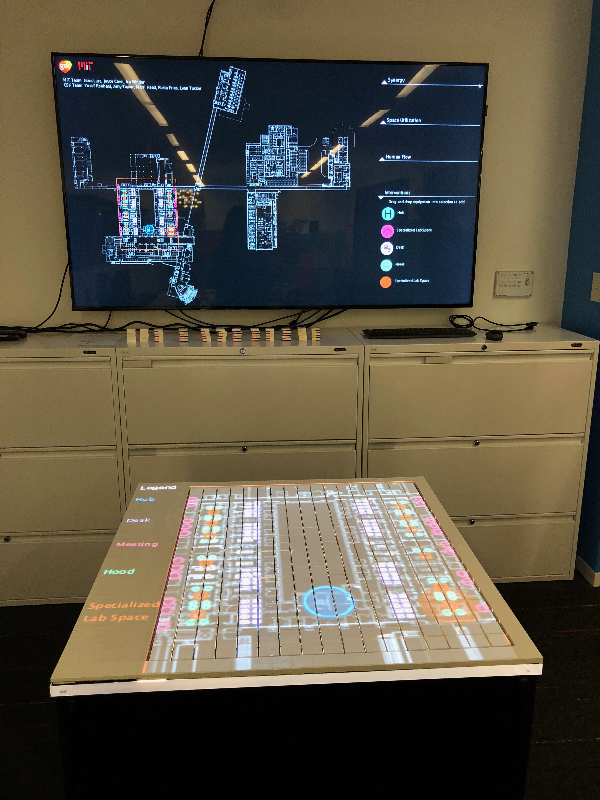
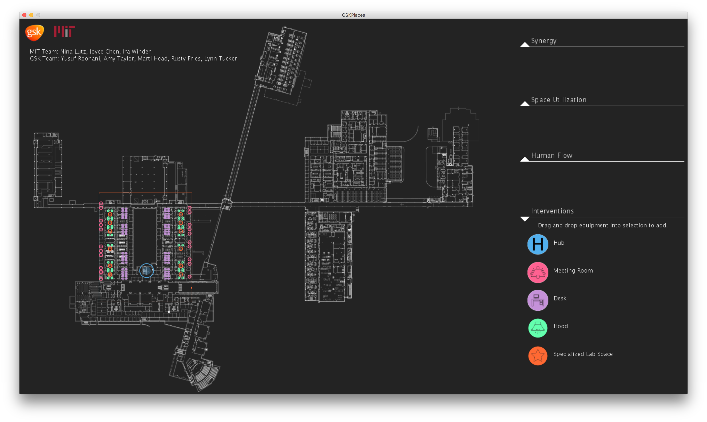
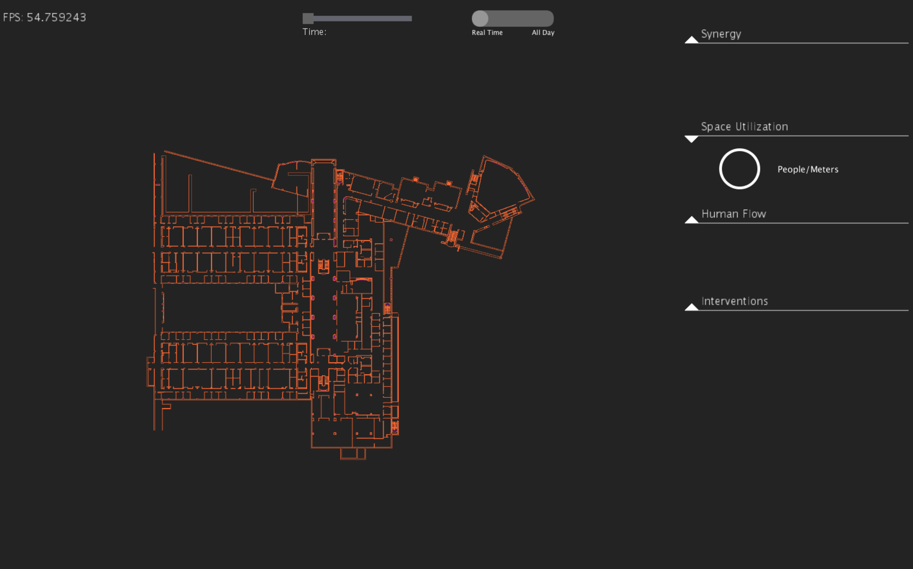
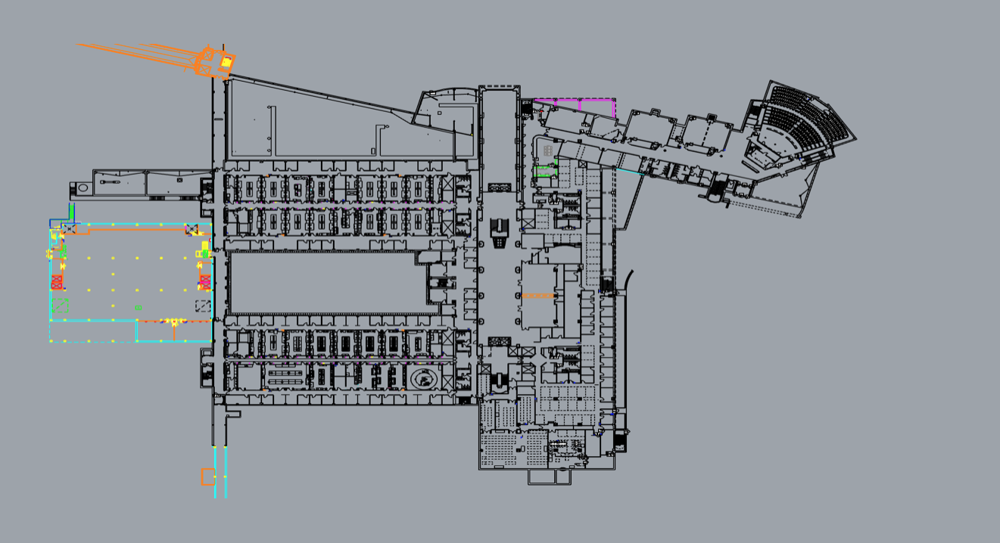
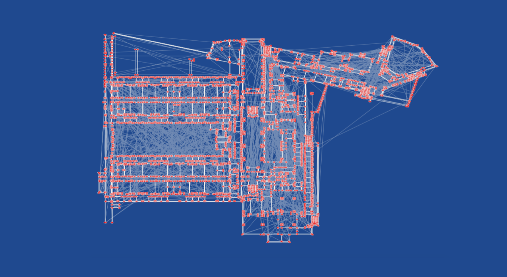
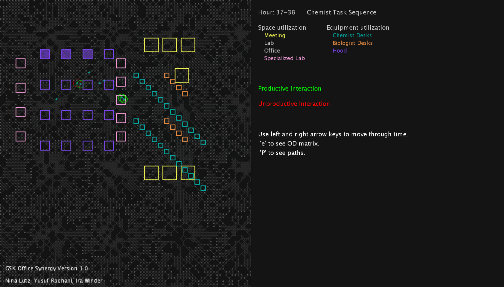

Part of a greater collaboration with GSK, my lab worked on two decision support systems. The first revolves around manufacturing and drug discovery, the second around smarter lab planning to increase synergy between scientists. Most of my work was on this project, but I acted as a research asssitant on the manufacturing project too.
For this project, my focus has stretched from computational archiecture, interface design, fabrication, and modeling. I am the primary software engineer on this project, structuring and implementing the model and interface. From the code that takes in raw archiectural floorplans, to designing and implementing a graphical and tangible interface with embedded electronics, to assiting in the development of a math model using Markovian random fields...I have been enjoying this project a lot.
Below is the tangible interface we built and designed for our first deployment at GSK's Upper Providence campus in Pennsylvania. Along with the desktop GUI.
 Here are some older GUI iterations as well as some architectural data.
   